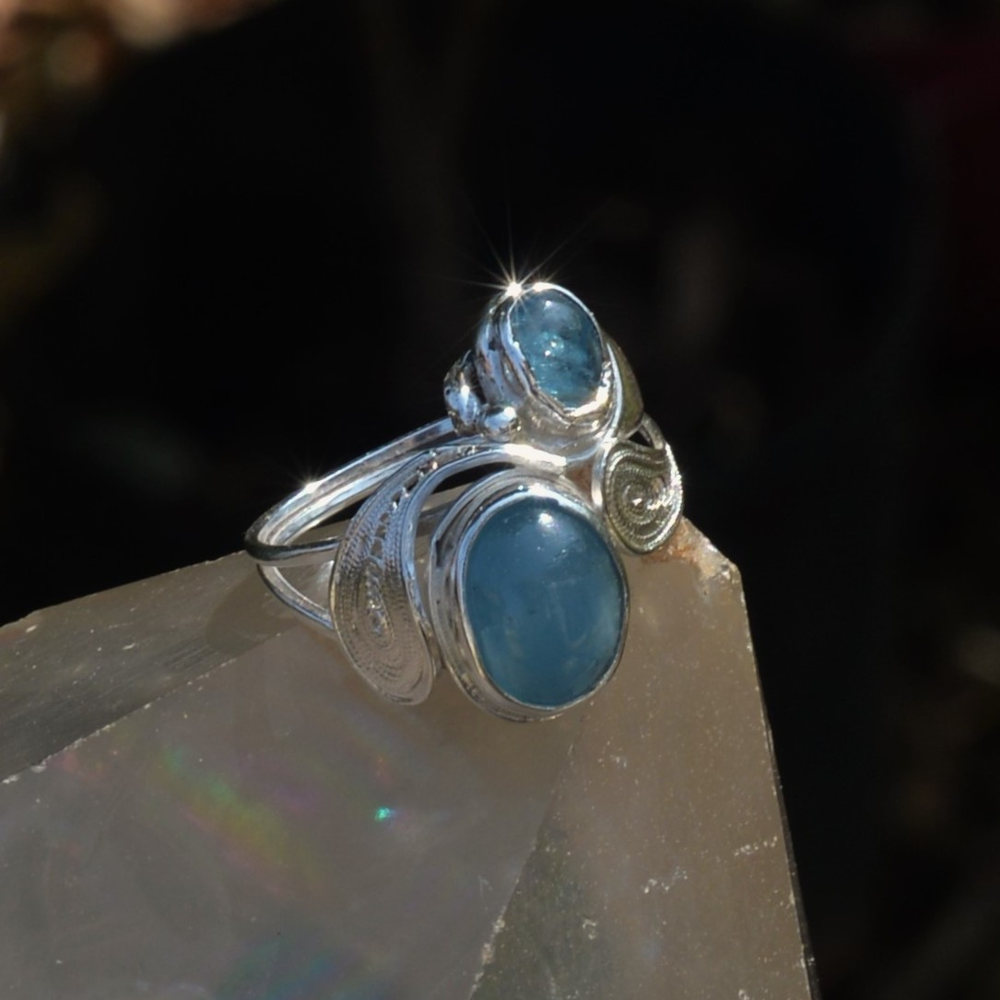

Anel Citrino
Movimento elíptico e espirais de filigrana, modelados inteiramente à mão.
Joalheria artesanal · Brasil
Prata trabalhada à mão, pedras naturais e formas que encontram seu próprio movimento.
Peças únicas
Cada criação parte da personalidade da pedra e ganha contorno no trabalho manual.
Movimento elíptico e espirais de filigrana, modelados inteiramente à mão.

Desenho delicado que valoriza a cor e a luminosidade da pedra natural.

O ateliê
Do desenho ao polimento, cada etapa é conduzida com tempo e atenção. A prata recebe forma, textura e movimento pelas mãos do ourives.
Conheça o processoNossa linguagem
Cristal Bellísimo